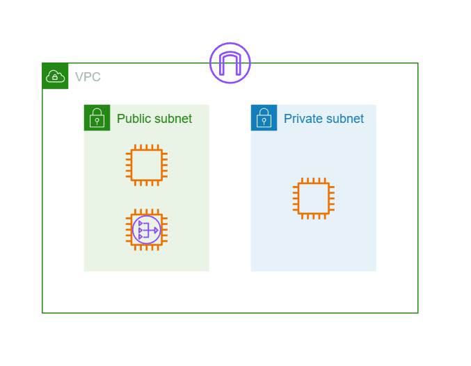
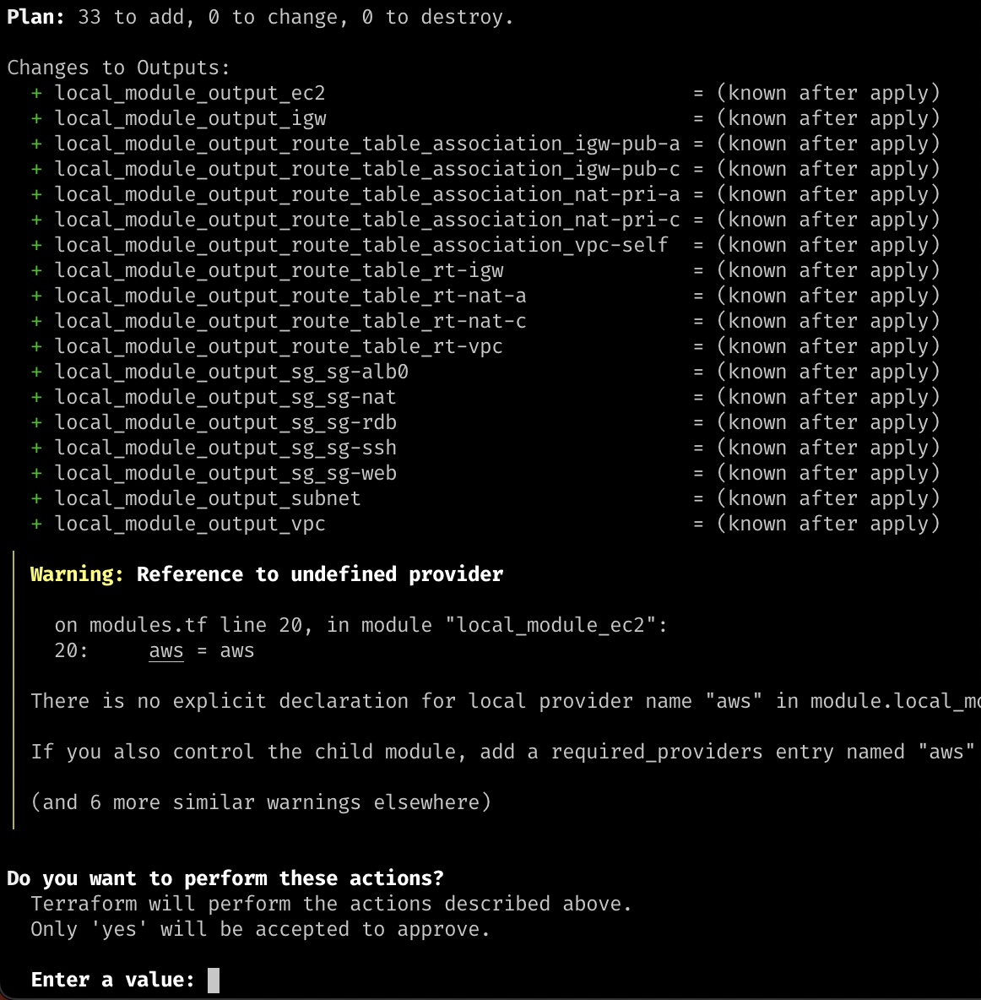
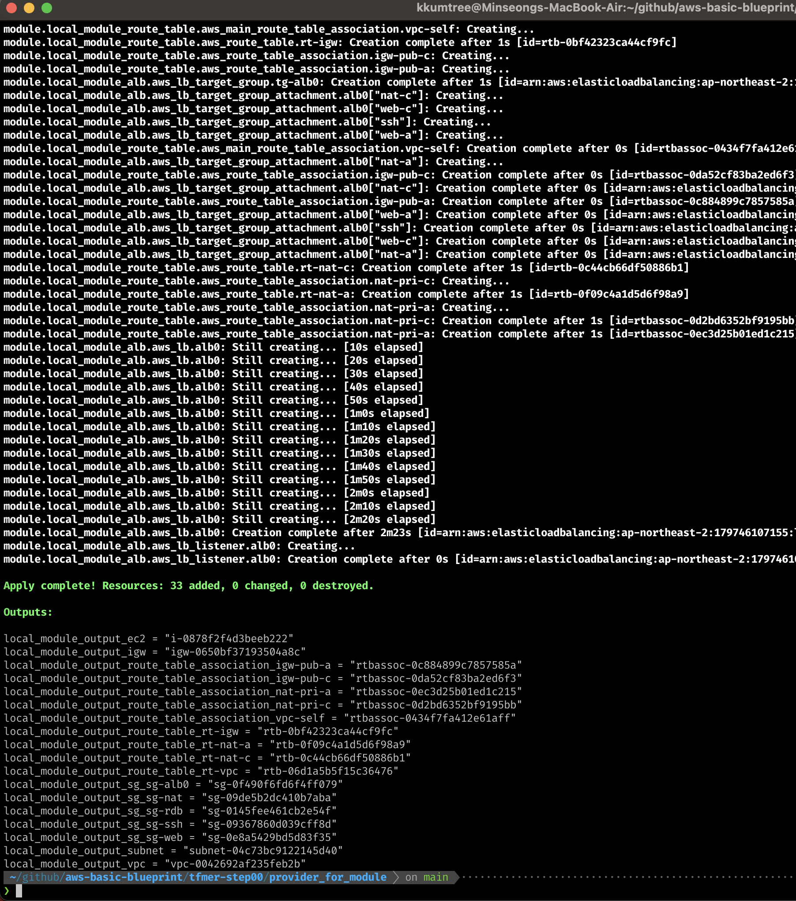
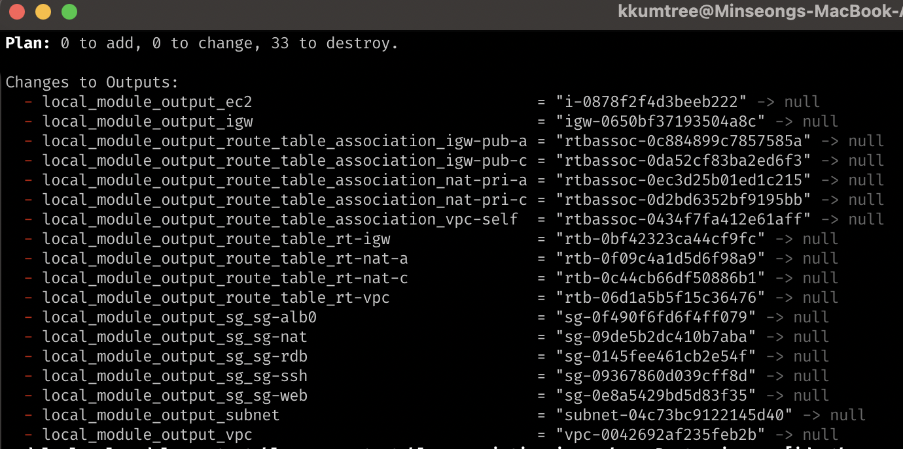
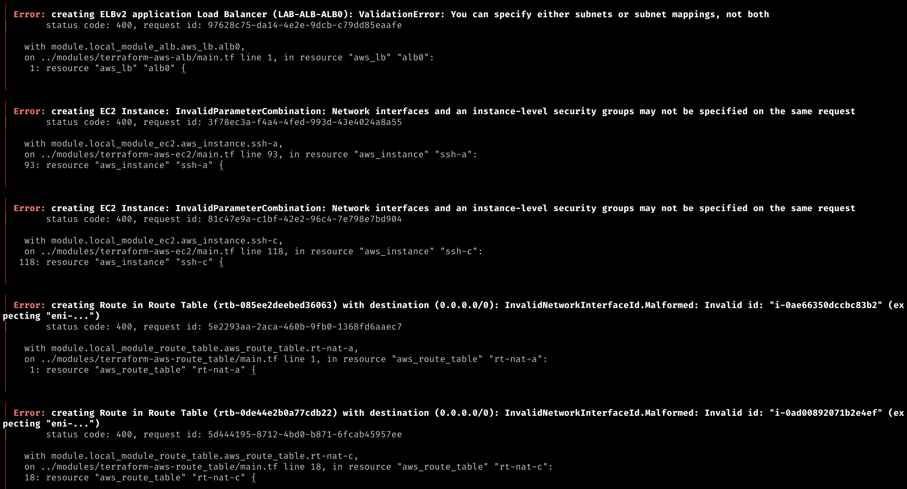

This week is last week of CloudNet@ group study about terraform.
In this study, my personal goal is making AWS architecture only with terraform and one tfstate file.
- Basic knowledge about AWS resources is required.
1. Terraform without Module
Before, I already met terraform for maintaining AWS in production level.
But at that time, our team maintain them as folder structure which is used by terraformer
# example structure
$ tree
.
├── alb
│ ├── lb.tf
│ ├── lb_listener.tf
│ ├── lb_target_group.tf
│ ├── lb_target_group_attachment.tf
│ ├── outputs.tf
│ ├── provider.tf
│ └── variables.tf
├── auto_scaling
│ ├── autoscaling_group.tf
│ ├── launch_template.tf
│ ├── outputs.tf
│ ├── provider.tf
│ └── variables.tf
├── ec2_instance
│ ├── instance.tf
│ ├── outputs.tf
│ ├── provider.tf
│ └── variables.tf
├── eni
│ ├── network_interface.tf
│ ├── outputs.tf
│ └── provider.tf
├── igw
│ ├── internet_gateway.tf
│ ├── outputs.tf
│ ├── provider.tf
│ └── variables.tf
├── nacl
│ ├── default_network_acl.tf
│ ├── outputs.tf
│ ├── provider.tf
│ └── variables.tf
├── route_table
│ ├── main_route_table_association.tf
│ ├── outputs.tf
│ ├── provider.tf
│ ├── route_table.tf
│ ├── route_table_association.tf
│ └── variables.tf
├── s3
│ ├── outputs.tf
│ ├── provider.tf
│ └── s3_bucket.tf
├── sg
│ ├── outputs.tf
│ ├── provider.tf
│ ├── security_group.tf
│ └── variables.tf
├── subnet
│ ├── outputs.tf
│ ├── provider.tf
│ ├── subnet.tf
│ └── variables.tf
└── vpc
├── outputs.tf
├── provider.tf
└── vpc.tf
At glance, this solution looks like cool.
But, problems were enough critical to think ‘why we have to use terraform?’.
- terraform state file(.tfstate) are spread at each folder.
It means, checkpoint we have to manage will be increased as much as we add new resources. - Cause by 1, each resource is dependent on other resources.
It means, we have to manage resources in order.
For example, we have to create VPC first, and then we can create subnet.
And if we don’t need specific resource, we have to check other resources whether they refer to the resource.
These actions could cause human error and affect to production services.
2. Terraform with Module
I had been failed to understand and transform legacy terraform structure to module structure, before the group study started.
So, in this post, I use basic AWS 1-tier architecture as example.

(1) Create legacy(folder) structure by terraformer
To make ease transformation, make architecture in AWS Web console.
And then, I use terraformer to make terraform files.
How to use terraformer? See official Docs, OR my post. :)
(2) Create folder tree for module structure
-
There are too much best practices to read all of them about terraform module. (By coincidence, all of them are written in medium)
-
Depth of folder is your choice, I make it below.
(It is suggested in the study and Book)
$ tree
.
├── modules
│ ├── terraform-aws-alb
│ │ ├── listener.tf
│ │ ├── main.tf
│ │ ├── output.tf
│ │ ├── tg.tf
│ │ ├── tg_attachment.tf
│ │ └── variable.tf
│ ├── terraform-aws-ec2
│ │ ├── data.tf
│ │ ├── main.tf
│ │ ├── output.tf
│ │ └── variable.tf
│ ├── terraform-aws-igw
│ │ ├── main.tf
│ │ ├── outputs.tf
│ │ └── variable.tf
│ ├── terraform-aws-route_table
│ │ ├── association.tf
│ │ ├── main.tf
│ │ ├── main_association.tf
│ │ ├── output.tf
│ │ └── variable.tf
│ ├── terraform-aws-sg
│ │ ├── data.tf
│ │ ├── main.tf
│ │ ├── output.tf
│ │ └── variable.tf
│ ├── terraform-aws-subnet
│ │ ├── main.tf
│ │ ├── output.tf
│ │ └── variable.tf
│ └── terraform-aws-vpc
│ ├── main.tf
│ ├── output.tf
│ └── variable.tf
└── provider_for_module
├── main.tf
├── modules.tf
└── output.tf
- Child modules have prefix
terraform-aws- - I named root(parent) module as
provider_for_moduleto distinguish.
(3) Transform legacy structure to module structure
In this section, only handle ec2 module as practice
$ tree
.
└── terraform-aws-ec2
├── data.tf
├── main.tf
├── output.tf
└── variable.tf
-
I divide terraform files for concentrating on actions
(Optional)and filename is just my policy.main.tf: Only IaC for ec2 module.
Guide is well-described in Docs.variable.tf: variables for customizing ec2 resources at local.
ex.name,tagsdata.tf: (Optional) data on AWS, they have to exist before managing resources.
Also guide exists in Docs.
ex.amioutput.tf: (Optional) output for other modules. ex.ec2_id,ec2_ip,ec2_primary_network_interface_id
-
Examples are below.
# main.tf
resource "aws_instance" "ssh" {
ami = data.aws_ami.al2023-arm64.id
associate_public_ip_address = "true"
instance_type = var.instance_type_arm64
key_name = var.key_name
metadata_options {
http_put_response_hop_limit = "2"
http_tokens = "required"
}
tags = {
Name = var.instance_tag_name_ssh
}
tags_all = {
Name = var.instance_tag_name_ssh
}
source_dest_check = "true"
subnet_id = var.subnet_pub-a_id
vpc_security_group_ids = [ var.sg_sg-ssh_id ]
}
# output.tf
output "aws_instance_ssh_id" {
value = aws_instance.ssh.id
}
output "aws_instance_nat-a_eni_id" {
value = aws_instance.nat-a.primary_network_interface_id
}
locals {
aws_instance_web-a_id = aws_instance.web-a.id
aws_instance_web-c_id = aws_instance.web-c.id
aws_instance_nat-a_id = aws_instance.nat-a.id
aws_instance_nat-c_id = aws_instance.nat-c.id
aws_instance_ssh_id = aws_instance.ssh.id
/* aws_instance_ssh-c_id = aws_instance.ssh-c.id */
}
output "generated_ec2_via_module" {
value = {
web-a = aws_instance.web-a.id
web-c = aws_instance.web-c.id
nat-a = aws_instance.nat-a.id
nat-c = aws_instance.nat-c.id
ssh = aws_instance.ssh.id
/* ssh-c = aws_instance.ssh-c.id */
}
}
# data.tf
data "aws_ami" "al2023-arm64" {
most_recent = true
owners = ["amazon"]
filter {
name = "name"
values = ["al2023-ami-*-arm64"]
}
}
data "aws_launch_template" "ssh-tpl-al2023-arm64" {
name = "LAB-SSH-TPL"
}
# variable.tf
variable "instance_type_arm64" {
description = "Instance type for ARM64 instances"
default = "t4g.small"
}
variable "vpc_id" {
description = "Security group IDs for web instances"
default = null
}
variable "instance_tag_name_ssh" {
description = "Instance tag name"
default = "LAB-SSH"
}
Oh, Wait… Why vpc_id variable is null?
(4) Create root module
At first, I set variables in each module…
Because, It was traditional way.
But, I realized that checkpoint to be maintained would be tremendously increased;
So, I changed plan by setting variables partially in root module.
- root module structure
└── provider_for_module
├── main.tf
├── modules.tf
└── output.tf
main.tf: I specify onlyterraformandproviderblocks.terraform: Set providers version.
(Also we can set backend strategy here.)provider: Set AWS provider for sharing with all modules.
Also we can default values like tags for monitoring all.
Before making module, provider should be set in a.tffile of each folder.
By module, we can set provider in root module once.
modules.tf: Connect with child modules.source: path of child module.depend_on: (Optional) Set dependency between modules.
Most AWS resources have dependency with each other. Just for safe launch.variable: Set variables for child module.
At here, we use other resources made in other modules, as variables.providers: Set provider for child module.
We set AWS provider asawsinmain.tf. So, we can reuse it here.
output.tf: (Optional) output for the machine that handles terraform.
# main.tf
terraform {
required_providers {
aws = {
source = "hashicorp/aws"
version = "~> 5.17.0"
}
external = {
source = "hashicorp/external"
version = "~> 2.3.1"
}
}
}
provider "aws" {
region = "ap-northeast-2"
default_tags {
tags = {
"Project" = "LAB_AWS_TF00"
"Environment" = "Learning"
"Terraform" = "true"
}
}
}
# modules.tf
module "local_module_ec2" {
source = "../modules/terraform-aws-ec2"
depends_on = [
module.local_module_vpc,
module.local_module_subnet,
module.local_module_sg,
module.local_module_igw
]
vpc_id = module.local_module_vpc.aws_vpc_vpc_id
subnet_pri-a_id = module.local_module_subnet.aws_subnet_pri-a_id
subnet_pri-c_id = module.local_module_subnet.aws_subnet_pri-c_id
subnet_pub-a_id = module.local_module_subnet.aws_subnet_pub-a_id
subnet_pub-c_id = module.local_module_subnet.aws_subnet_pub-c_id
sg_sg-web_id = module.local_module_sg.aws_security_group_sg-web_id
sg_sg-nat_id = module.local_module_sg.aws_security_group_sg-nat_id
sg_sg-ssh_id = module.local_module_sg.aws_security_group_sg-ssh_id
}
module "local_module_vpc" {
source = "../modules/terraform-aws-vpc"
}
# output.tf
output "local_module_output_ec2" {
value = module.local_module_ec2.aws_instance_web-a_id
}
output "local_module_output_vpc" {
value = module.local_module_vpc.aws_vpc_vpc_id
}
3. Check terraform works
(1) terraform apply

(2) all resources are created

(3) terraform destroy to delete all

4. Advantages of module structure
I think, advantages of module structure is..
- We can manage all resources in one tfstate file.
- Variables could be controlled in one root folder!
- It could be easier to find dependency error between resources.

5. Conclusion
In this post, I review my terraform code with module structure.
It was not easy to configure but understanding resources well in admin’s view.
This example still have some problems to be refactored.
I wish this post will be helpful to moduling terraform.
(Codes will be updated in this post)